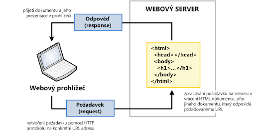
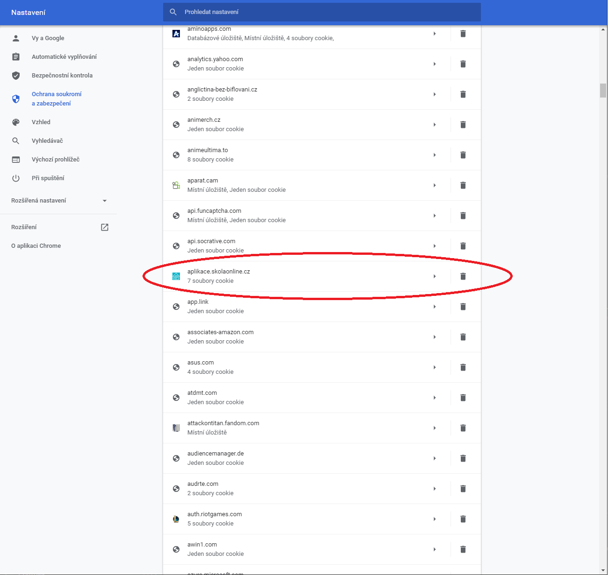

Vznik WWW a principy
World Wide Web (WWW, také pouze zkráceně web), ve volném překladu „celosvětová pavučina“, je označení pro aplikace internetového protokolu HTTP. Je tím myšlena soustava propojených hypertextových dokumentů. Služba se zrodila se v roce 1989 v evropském vědeckém centru CERN v Ženevě díky Timu Berners-Lee.
Za hypertext označujeme takový text, který obsahuje propojení na jiné texty pomocí tzv. hypertextových odkazů. Ve službě WWW jsou realizovány jako tzv. URL odkazy. Služba je založena na spolupráci WWW klientů (browserů) s WWW serverem. Prvním komerčním prohlížečem webových stránek byl na počátku 90. let minulého století Mosaic.
Při jejich spolupráci fungují následující mechanismy:
- komunikační protokol HTTP, pomocí něhož WWW klient a WWW server komunikují,
- jazyk HTML, definující formát WWW stránek, které server vrací klientovi.
W3C je mezinárodní konsorcium jehož členové společně s veřejností vyvíjejí webové standardy pro WWW. Konsorciu předsedá Tim Berners-Lee.
WWW - otázky a odpovědi
Webový server
Server je bezobslužný program, který přijímá a obsluhuje požadavky klientů. Webový server je připojen k počítačové síti a přijímá požadavky v souladu s protokolem HTTP (HTTP Request). Tyto požadavky vyřizuje a počítači, který požadavek vznesl, vrací odpověď.
Příklady webových serverů
- Apache
- NGINX
- Microsoft Internet Information Server

Webové klienty
Klient je program, který komunikuje s uživatelem a na základě jeho pokynů se obrací na jednotlivé servery, získává od nich data a zobrazuje je.
Nejběznějšími klienty jsou:
- Mozilla Firefox
- Opera
- Safari
- Google chrome
- Microsoft Edge
- Internet Explorer
Komunikace
Komunikace probíhá přes pravidla, kterým se říka protokoly. Pro přenos webových stránek se používá protokl HTTP a HTML (ten definuje formát WWW stránek, které server vrací klientovi
HTTP
HTTP je jednoduchý aplikační protokol s komunikací charakteru požadavek – odpověď. Žádosti mají formu jednoduchých příkazů a mohou být upřesňovány pomocí různých parametrů, tzv. hlaviček. Odpovědi mají číselný charakter a nejčastěji obsahují i WWW stránku, kterou klient požadoval.
Stavové kódy HTTP
| Kód | Typ zprávy |
|---|---|
| 1.. | informační zpráva |
| 2.. | úspěšné vyřízení požadavku |
| 3.. | problémy spojené s přesměrováním |
| 4.. | chyby související s vyřízením požadavku (stránka není dostupná, apod.) |
| 5.. | interní chyby serveru |
HTTPS
Samotný protokol HTTP neumožňuje šifrování ani zabezpečení integrity dat; to nabízí bezpečnější varianta označováná jako HTTPS. V současné době je používán i pro přenos dalších informací. Pomocí rozšíření MIME umí přenášet jakýkoli soubor (podobně jako e-mail), používá se společně s formátem XML pro tzv. Webové služby (spouštění vzdálených aplikací) a pomocí aplikačních bran zpřístupňuje i další protokoly, jako je např. FTP nebo SMTP.
Souhrn výhod
- Možnost oveření identity
- Důvěrnost přenášených dat
- Integrita obsahu
URL
URL je řetězec znaků s definovanou strukturou, který slouží k přesné specifikaci umístění zdrojů informací (ve smyslu dokument nebo služba) na Internetu. URL definuje doménovou adresu serveru, umístění zdroje na serveru a protokol, kterým je možné zdroj zpřístupnit.
Cookies

Internetový vyhledávač
- Prohledání webových stránek. Pro prohledání webových stránek má internetový vyhledávač automatický program, tzv. vyhledávací robot (crawler, bot, nebo též spider – „pavouk“), který prochází celý webový prostor. Robot dostane na začátku seznam atraktivních vstupních míst (odkazů), jejichž obsah si přečte, uloží do databáze a zapamatuje si navštívenou adresu odkazu, aby se na ni již podruhé nevracel. Z obsahu stažené stránky vybere seznam všech obsažených odkazů a opět všechny odkazy navštíví. Cyklus návštěvy, sesbírání odkazů a dalších návštěv se stále opakuje. Robot se na navštívené stránky vrací v pravidelných intervalech, aby zjistil, zda se na stránce neobjevily nějaké nové informace. Z principu práce vyhledávače vyplývá, že nikdy nemá úplně aktuální informace, ale prezentuje je se zpožděním.
- Indexování. Databázi obsahující uložené obsahy navštívených stránek je potřeba indexovat, aby bylo možné podle zadaných slov co nejrychleji najít adresy stránek, které je obsahují. Zároveň je nutné vystavět index tak, aby poskytoval na prvních místech stránky s nejvyšší užitnou hodnotou (relevancí, mající nejvyšší hodnocení kvality, nejvyšší váhu). Pro výpočet relevance se používají nejrůznější algoritmy, které jsou založeny na nejrůznějších znacích stránek a různých úhlech analýzy jejich obsahu:
- Váha slov. Stránka má vyšší hodnocení, když má hledané slovo na stránce vyšší váhu. Váha slov se zvyšuje, je-li slovo v titulku stránky, nadpisu nebo blíže k začátku stránky, případně se na stránce opakuje. Váhu slov lze zneužít vkládáním atraktivních slov do obsahu stránky bez ohledu na její skutečný obsah nebo prostým opakováním slov. Vyhledávač se brání penalizací (snížením kvality) podezřelých stránek.
- Atraktivita stránky. Stránka má vyšší hodnocení, když na ni odkazuje více jiných stránek, protože zřejmě obsahuje zajímavé informace. Atraktivitu lze zneužít vytvářením falešných stránek, které odkazují na stránku, která má získat vyšší hodnocení. Vyhledávač se brání sledováním podezřelého náhlého hromadění odkazů.
- Vyhledávání. Databáze a její index se zpřístupní na vstupní stránce vyhledávače. Uživatel získá po zadání hledaných slov seznam adres, na kterých robot hledaná slova našel. Pro vyšší přehlednost se zobrazuje kromě odkazu ještě titulek stránky, a okolí nalezených slov.
HTML
Hypertext Markup Language (zkratka HTML) je v informatice název značkovacího jazyka používaného pro tvorbu webových stránek, které jsou propojeny hypertextovými odkazy.
Hypertext je způsob strukturování textu, který není lineární. Obsahuje tzv. hyperlinky neboli česky (hypertextové) odkazy. Rovněž odkazuje i na jiné informace v systému a umožňuje snadné publikování, údržbu a vyhledávání těchto informací.